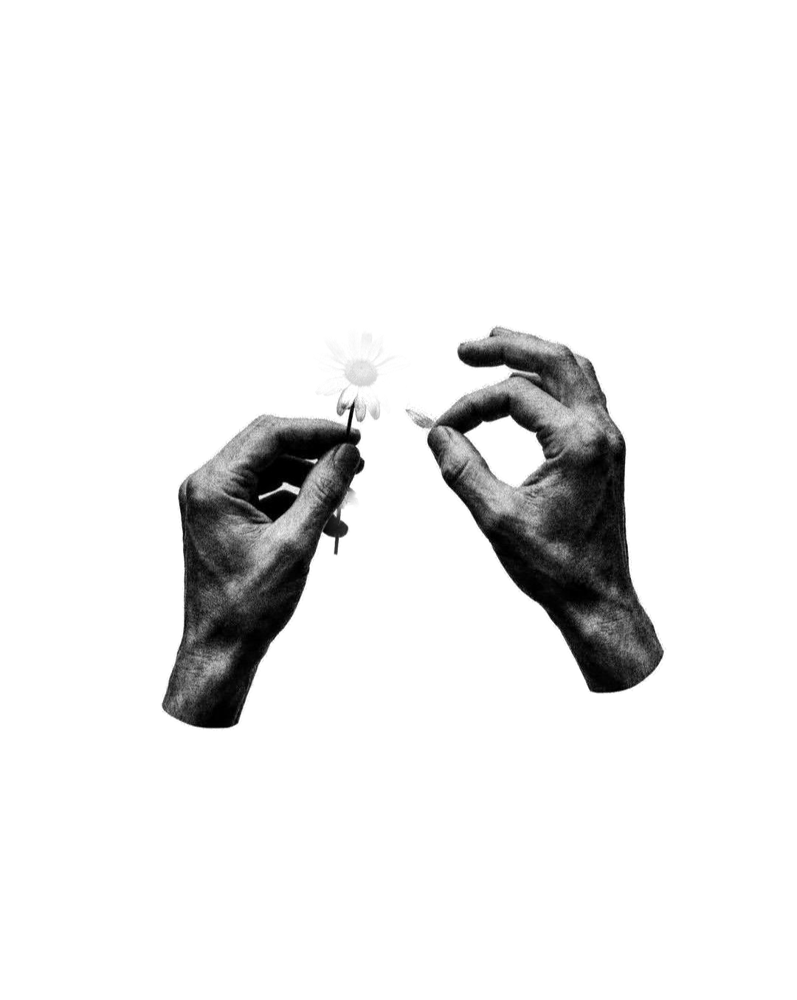
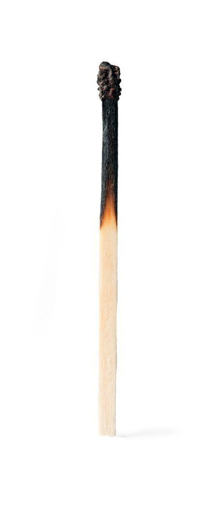

Lia Moraes // PsicólogaCRP 00/00000
o que a gente faz na
terapia
entender o que
você sente
dar nome às emoções
rever padrões
que se repetem
aprender a
colocar limites
se acolher sem
se cobrar
fazer as pazes
com o passado
@psi.liamoraessalva pra lembrar

Lia Moraes // PsicólogaCRP 00/00000

frases que parecem apoio,
mas, na verdade, invalidam o que você sente:
“podia ser pior.”
“pensa positivo!”
“isso é coisa da sua cabeça.”
“você tem tudo pra ser feliz.”
Acolher é ouvir sem corrigir.
@psi.liamoraespsicologia clínica
Lia Moraes // Psicóloga@psi.liamoraes
Vocênãoprecisa
ter certezado que
sente pracomeçar.
bem-me-quer...

Lia Moraes // Psicólogametáforas da terapia
metáfora 01
Os passageiros
do ônibus
Imagine que você dirige um ônibus. No caminho, sobem passageiros barulhentos:
o medoa dúvidaa autocrítica
Eles gritam pra você mudar de rota.
Você não precisa expulsar ninguém pra seguir pelo caminho que importa.
@psi.liamoraes|CRP 00/00000

Lia Moraes // PsicólogaCRP 00/00000
Burnout
não é preguiça.
é o esgotamento
que vai além
do cansaço.
@psi.liamoraespsicologia clínica
Lia Moraes // PsicólogaCRP 00/00000
oi, eu sou
a Lia!

entre uma sessão e outra
Atendo adultos online e presencial. Por aqui, falo de ansiedade e do direito de pausar.
@psi.liamoraes